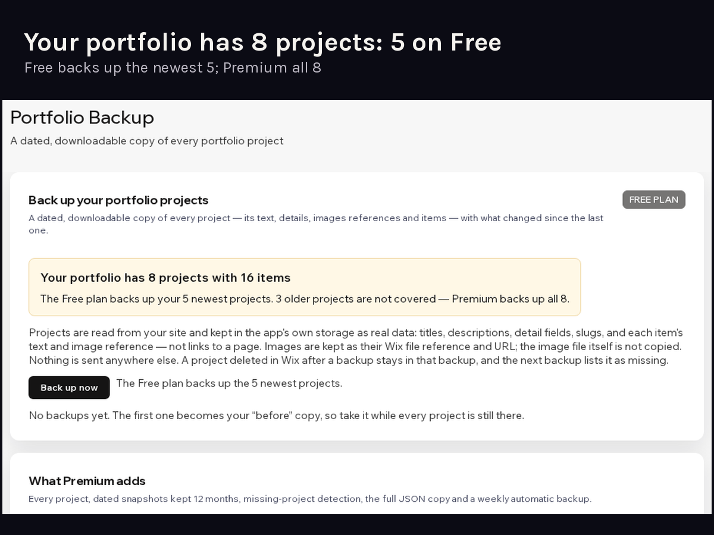

Portfolio Backup: CSV Export
Export every portfolio project as one file
- Every project, its details and every item
- Dated CSV and full JSON copies you keep
- See which projects went missing
- Free: the 5 newest; Premium: all

What it does
Your portfolio holds work you spent years building: project titles and descriptions, detail fields, cover images, collections and every item. The dashboard has no export button, so there is no file to keep.
This app reads every project and item and keeps its own dated copy. Press Back up now and it saves the real data: each project's title, description, details, slug, cover image and every item's text and image link. From the history you download a CSV that opens in Excel or Sheets, or, on Premium, a full JSON copy with every field.
Each backup is compared with the one before: two new, one missing, three changed. A project deleted after a backup stays inside it, and the next backup names it as missing.
The Free plan backs up the 5 newest projects and keeps 2 backups. Premium backs up every project and item, keeps snapshots for 12 months, shows the missing list, adds the JSON copy and takes a weekly automatic backup.
This app cannot rebuild projects for you: the portfolio tool has no restore endpoint, so you rebuild by hand from the CSV or JSON. It is a copy you own and can carry to another site. Premium costs $5 a month, or $4 a month billed yearly.
Price
Free
Premium
$5/month, or $4/month billed yearly ($48/year)
- Every project and every item
- Dated snapshots kept 12 months
- The missing-project list
- The full JSON copy and a weekly automatic backup